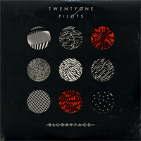
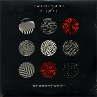

Twenty One Pilots - Music Analysis

Find the original Flickr image above from Fiona McKinlay here.
Twenty One Pilots is an alternative rock duo from Ohio consisting of members Tyler Joseph (vocals) and Josh Dun (drums). What makes Twenty One Pilots unique is its ability to intricately weave "troubling topics" (e.g., depression and suicide) into its tracks. When writing his music, Joseph typically uses a variety of metaphors and figures of speech to creatively discuss personal difficulties which with he has struggled. Not only do the lyrics convey hidden meaning, but Twenty One Pilots' instrumental features typically convey specific feelings, as well. Overall, this rock duo does an excellent job highlighting modern day personal struggles, making their music relatable and enjoyable.
Click on an album to listen to a track!
 
